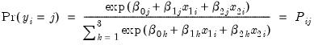
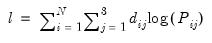
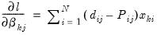
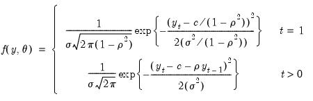
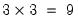
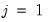
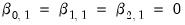
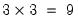
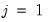
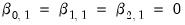

|
|
|




 are specific to each category so there are  parameters in this specification. The parameters are not all identified unless we impose a normalization, so we normalize the parameters of the first choice category  to be all zero:  (see, for example, Greene (2008, Section 23.11.1).
are specific to each category so there are  parameters in this specification. The parameters are not all identified unless we impose a normalization, so we normalize the parameters of the first choice category  to be all zero:  (see, for example, Greene (2008, Section 23.11.1). has chosen alternative
has chosen alternative  and 0 otherwise. The first-order conditions are:
and 0 otherwise. The first-order conditions are: is the constant term,
is the constant term,  is the AR(1) coefficient, and
is the AR(1) coefficient, and  is the error variance, all to be estimated (see for example Hamilton, 1994, Chapter 5.2).
is the error variance, all to be estimated (see for example Hamilton, 1994, Chapter 5.2).